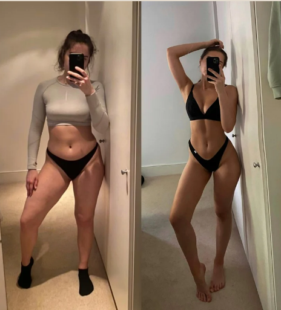

MY STORY
Свій фітнес-шлях я починала, як любитель. Тоді я ще не знала, що це стане моїм
призначенням та роботою
Це був мій метод відволіктись, відчути себе здоровішою, спосіб знайти себе ну і звісно скинути декілька
лишніх кілограмчиків
Щоб чогось досягти в житті, завжди потрібно розвиватись та працювати над собою. Цю істину я зрозуміла ще
в
досить юному віці, коли несподівано мені прийшло усвідомлення, що я зараз не на своєму місці, що я варта
чогось значно більшого. Як і кожен, хто читає цей текст. Тому я почала із себе, почала з того, що можу
змінити сама, – це свій зовнішній вигляд.
Ми багато на що не можемо вплинути без грошей та зв'язків, але ми завжди можемо вплинути на свій
зовнішній
вигляд та внутрішній стан. Це і відкриє нам двері до життя мрії: гармонії, щастя, здоровʼя, краси та
грошей.
Тому, якщо не знаєш, з чого почати, почни зі спорту, а все інше закрутиться-завертиться. Це працює, я
перевірила..
ФОТО ДО/ПІСЛЯ
Вже тоді я відчувала, що можу допомогти багатьом дівчатам і жінкам зробити їх
тіло чудовим.
Я почала вивчати тему фітнесу та дієтології, читати книги та статті. Щодня мене це захоплювало ще
більше, і я зрозуміла — це те, що мені потрібно! Після отримання перших дипломів я відчувала
впевненість у
своїх знаннях.
ПІСЛЯ ОТРИМАННЯ ПЕРШИХ ДИПЛОМІВ І СЕРТИФІКАТІВ Я ВІДЧУВАЛА ВПЕВНЕНІСТЬ У СЕБЕ І СВОЇХ ЗНАННЯХ
Тоді й була створена моя перша програма харчування та тренувань
Дівчатка, займаючись за моєю програмою, досягали бажаної мети.

Вже тоді я відчувала, що можу допомогти багатьом дівчатам і жінкам зробити їх
тіло чудовим.
Я почала вивчати тему фітнесу та дієтології, читати книги та статті. Щодня мене це захоплювало ще
більше,
і я зрозуміла — це те, що мені потрібно! Після отримання перших дипломів я відчувала впевненість у
своїх
знаннях.
ПІСЛЯ ОТРИМАННЯ ПЕРШИХ ДИПЛОМІВ І СЕРТИФІКАТІВ Я ВІДЧУВАЛА ВПЕВНЕНІСТЬ У СЕБЕ І СВОЇХ ЗНАННЯХ
Тоді й була створена моя перша програма харчування та тренувань
Дівчатка займаючись за моєю програмою, досягали бажаної мети
Чудово почувалися і були мені вдячні. Але обробляючи їхні звіти та переглядаючи фотографії до-після,
я помітила, що у багатьох є певні нюанси зі здоров'ям: сколіоз, проблеми зі стопою, проблеми з шиєю,
перекоси, випадання волосся, погана якість шкіри, грушеподібний живіт, перекоси, проблеми з диханням
.
Я зрозуміла, що мені цікаво не просто привести тіло в ідеальний вигляд, але зробити це з користю для
здоров'я. Тоді я дізналася про таке поняття, як розумний фітнес і почала поглиблено його вивчати.
ПЕРШИМ І НАЙГОЛОВНІШИМ МОЇМ ВИСНОВОК ТОГО ЧАСУ СТАЛО:
Завалені усередину стопи можуть призвести до того, що ви не відчуватимете свої сідниці під час
виконання вправ. При перекос тазу можуть бути деформовані сідниці. З неправильною поставою ви ніколи
не отримаєте плаский живіт. А якщо вас турбує живіт, що випирає, нетримання сечі або опущення
органів малого таза, то тут знадобиться робота з тазовим дном
На сьогоднішній день я перебуваю у постійному розвитку та працюю без вихідних 24/7м.
Мій досвід та знання допомагають мені провести діагностику, проаналізувати ситуацію та зрозуміти, в
якому напрямку нам рухатися.
Кожна людина індивідуальна, відповідно не може бути ніяких готових шаблонних рішень, готових тренувань та
програм харчування, які підходять всім
Моя місія – не просто накачати вам сідниці та створити вузьку талію, я хочу змінити ваш підхід до
тренувань,
до харчування та поставити ваше здоров'я на перше місце.
Бо ж це не просто моя робота, а моє життя!
Знаєте, чим я найбільше пишаюся? Не просто хорошими результатами, а тим, що мені вдалося привинути любов
до
спорту. Дівчата, які раніше казали: "Я не люблю спорт" або "Зал – це не моє, я вже пробувала багато
разів",
зараз стали одними з найкращих тренерів.
Зі здоров'я починається щастя та краса!
MY EDUCATION
Повинно тягнути до знань не заради
суперечок, не для зневаги інших, не
заради вигоди, слави, влади чи інших
ницих цілей, а заради того, щоб бути
корисним у житті
Ф.Бекон
Я вчилась у найкращих школах та у найкращих спеціалістів, як і України так і закордону
Я знаходжуся в постійному розвитку та отримую нові знання безперервно,
щоб мої клієнти приходили до результату максимально швидко та без
помилок.
Пропоную вам ознайомитися з моїми знаннями, дипломами та
сертифікатами
ЗНАННЯ В ДІЄТОЛОГІЇ ТА НУТРИЦІОЛОГІЇ
дозволяють мені якісно скласти харчування з урахуванням різних цілей клієнта та вихідних даних
ДЯКУЮЧИ ЗНАННЯМ АНАТОМІЇ, БІОМЕХАНІКИ ТА ФІЗІОЛОГІЇ
я можу якісно провести візуальну діагностику, а також скласти план
тренувань, враховуючи особливості клієнта - досягти найкращих
результатів,
покращуючи не лише зовнішній вигляд, а й стан здоров'я та
якість життя
ДЯКУЮЧИ МОЄМУ ДОСВІДУ
я можу зрозуміти вас на 100% , адже всі ці проблеми були і в мене:
проблеми із стопами, зажими в спині та біль поясниці, нерівномірність
сідниць, низ живота, набряки, дуже проблемна шкіра обличчя, целюліт,
випадіння волосся, неприйняття себе... та багато іншого....Але повірте все це
можна вирішити, особливо якщо ти знаєш цю безпрограшну формулу
МОЇ ДИПЛОМИ ТА СЕРТИФІКАТИ: